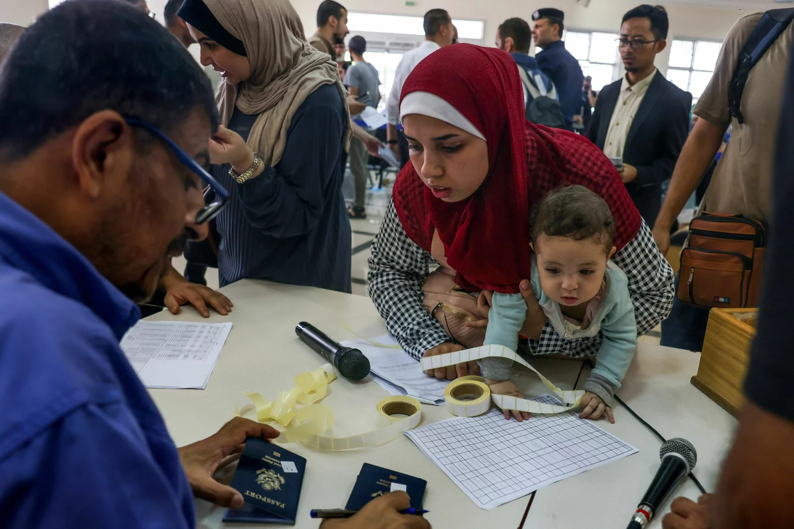
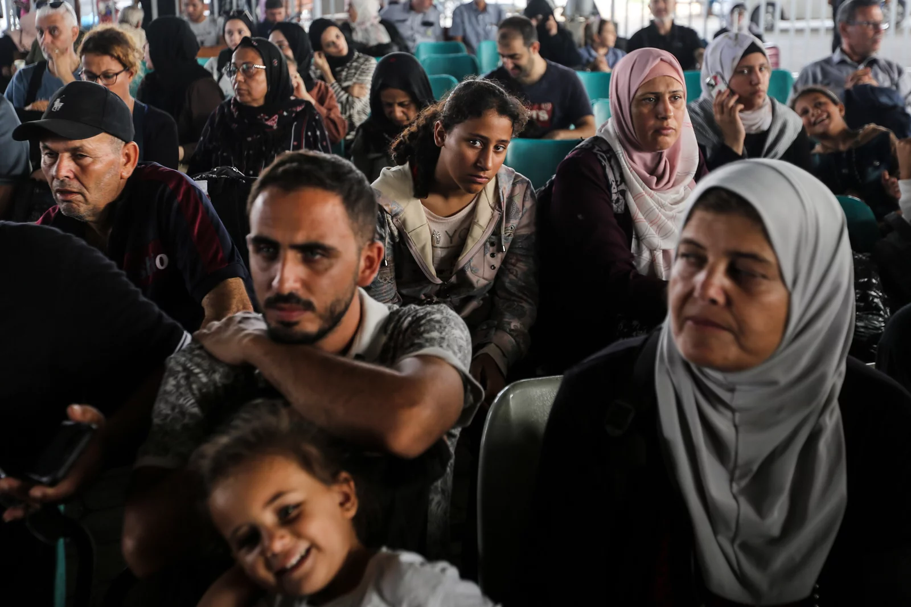

Assignment Source:https://www.npr.org/2023/11/02/1210094192/more-foreign-citizens-including-about-400-americans-are-set-to-depart-gaza"
By Becky Sullivan, Anas Baba, Bill Chappell
Civilians leaving Gaza display their documents as dual national Palestinians and foreigners prepare to cross the Rafah border point with Egypt, in the southern Gaza Strip, on Thursday.
Said Khatib/AFP via Getty Images
RAFAH, the Gaza Strip — Hundreds of Americans and other foreign passport holders are poised to leave the Gaza Strip Thursday, continuing the first major departure of civilians from the territory since the war between Israel and the militant group Hamas began earlier this month.
A new list of passport holders approved to depart — all of them foreign citizens or dual national Palestinians — was issued by the border authority overnight. It included around 400 Americans. It was unclear how many would be able to cross Thursday.
The State Department has been in contact with about 400 Americans who have expressed a desire to leave, department spokesperson Matthew Miller said Wednesday. With their family members, the total number is around 1,000, Miller said.
Haneen Okal, a 31-year-old mother of three, is on the list of American passport holders approved to leave Gaza.
"We can't describe our feelings of getting evacuated," she told NPR as she waited at the Rafah border crossing on Thursday. "But we're still sad because what's happening in Gaza. The war is still there."
"I left my two sisters, my two brothers, and my mom and my dad," Okal said. "My mom and my dad do have American citizenship, but they don't want to leave my other family members, so hopefully we can get them all out of there as soon as we can."
"It's a disaster. There is lack of food, electricity, power, no internet in there, bombing is all over. It's not safe at all," she said. "I don't know when this situation will end, but it's really a disaster in there."
Citizens with foreign passports wait to travel through the Rafah crossing on Thursday. At least 300 civilians, all of them foreign citizens or dual nationals, departed Gaza Wednesday.
Ahmad Hasaballah/Getty Images
At least 300 foreign citizens departed Gaza on Wednesday, according to the Gaza border authority, which is operated by Hamas. In addition, dozens of critically wounded Palestinians were transported by ambulance to hospitals in Egypt for treatment.